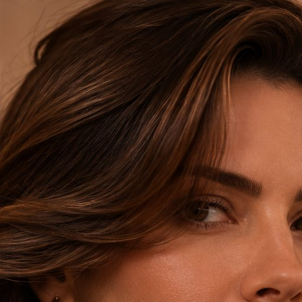
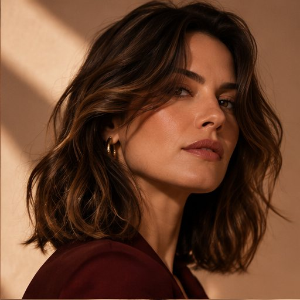
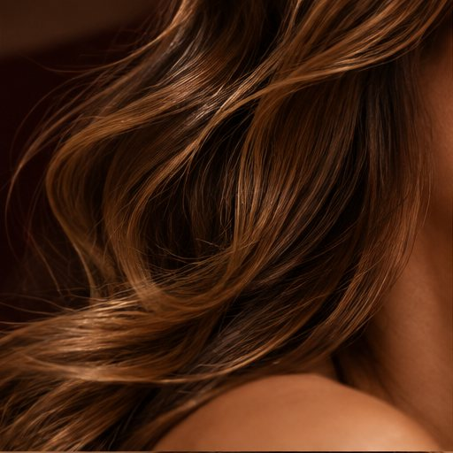
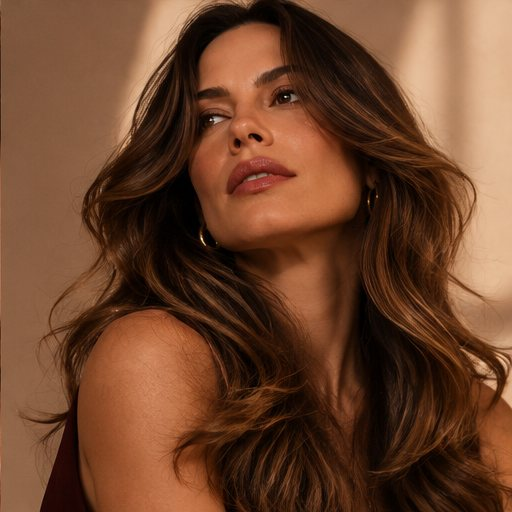

Olá,
Keila.
Este é o seu espaço. Um novo olhar sobre as linhas, as formas e as escolhas que fazem de você uma mulher única — e sobre como usar cabelo, óculos e acessórios para comunicar, com intenção, tudo aquilo que você deseja.
Um olhar só seu.
Assista à sua análise completa e retorne a ela sempre que quiser. Logo abaixo, você encontra as principais descobertas e orientações para colocar em prática.
Se o vídeo não carregar neste navegador, assista diretamente no YouTube ↗.
Suas principais
descobertas.
O visagismo não busca transformar você em outra pessoa. Ele ajuda a reconhecer suas características e usá-las com intenção, respeitando quem você é.

Suas linhasTesta, olhos e boca curvos; sobrancelhas horizontais com leve angulação moderna.Óculos criativosArmações grandes que parecem parte de você — sua marca mais autêntica.
A transformaçãoLinhas inclinadas para modernidade, curvas para harmonia — as duas juntas.
FinalizaçõesLisa, arrojada, com babyliss: cada escolha expressa uma versão de você.
AcessóriosLinhas retas para dias de força; formas redondas para dias de leveza.Óculos com
intenção.
O mesmo corte, três mensagens diferentes. Cada armação que você já tem conversa com a sua imagem de um jeito — escolha a que combina com o que você quer comunicar no dia.
tartaruga.
Delicadeza, autenticidade e sofisticação discreta.
Armação de acetato com efeito tartaruga, que traz textura sem pesar. Uma escolha versátil, que ilumina o rosto e mantém a sua expressão leve.
- Comunica proximidade e autenticidade.
- Ótima para o dia a dia e para ambientes mais acolhedores.
vermelho.
Ousadia, personalidade e modernidade.
Mistura linhas inclinadas e linhas retas ao mesmo tempo. As retas, nas partes superior e inferior, adicionam força; as inclinadas trazem modernidade e destacam o olhar.
- Reforça uma estética criativa e contemporânea.
- Perfeita para dias em que você quer ser notada.
claro.
Equilíbrio, leveza e presença sem excessos.
A armação que você usou no salão. A cor clara traz suavidade e um ar mais acolhedor; o tamanho grande garante que ela seja percebida na hora — e mostra uma mulher diferente, muito mais criativa do que com óculos tradicionais e finos.
Suas orientações
personalizadas.
Abra cada tópico para rever as recomendações que foram construídas durante a sua consultoria.
01. Formato do rosto
Seu rosto foi caracterizado como misto, com propensão maior ao hexagonal de base reta: o ângulo da mandíbula fica bem na altura da boca e as laterais são quase retas, enquanto a parte de cima é mais curva. Também foi considerada a possibilidade de um oval, mas a inclinação da mandíbula, vista de perfil, confirmou o hexagonal.
São dois formatos que combinam com qualquer tipo de corte — extremamente harmônicos.
02. Testa, maçãs, mandíbula e queixo
A testa é ampla e alta, com contorno arredondado; o cabelo repartido de lado interferia nessa leitura. As maçãs do rosto estão entre as regiões de maior largura — é o seu campo da emoção, onde as pessoas tendem a olhar mais.
A mandíbula é definida, com ângulos suavizados: há estrutura, mas sem agressividade. O queixo é levemente arredondado, e o rosto é comprido na medida certa, sem perder a proporção.
03. Linhas e traços
Curvatura na testa, sobrancelhas de predominância horizontal com uma leve angulação (que traz modernidade ao olhar), olhos arredondados e suavemente amendoados, boca de contorno delicado. O resultado é uma imagem equilibrada entre suavidade e estrutura.
04. Terços faciais
Seu campo racional (testa) é o mais desenvolvido — sinal de uma mulher que pensa bastante antes de agir. Depois vêm o campo emocional (até o fim do nariz) e o intuitivo.
Estratégia: dar foco ao campo emocional com os óculos, para trazer intensidade à imagem; e levar linhas inclinadas para a região da testa, que já é muito curva, para não deixar a imagem suave demais.
05. Sobrancelhas
Relativamente retas, com arco discreto. A sugestão é preservar a espessura natural e fazer apenas uma limpeza cuidadosa. Se desejar algo diferente, um arco suave — mas evite um arqueamento muito alto, porque os óculos grandes já acrescentam bastante informação na região dos olhos.
06. Óculos e armações
Armações grandes e diferenciadas comunicam originalidade, expressão, ousadia e descontração. Observe três aspectos ao escolher:
Geometria — armações angulares, que puxam para cima, reforçam a estrutura facial; curvas dão continuidade aos seus traços suaves.
Dimensão — armações maiores criam protagonismo nas regiões superior e central do rosto.
Cor e material — explore óculos maiores e coloridos para uma imagem cada vez mais expressiva.
Nos dias em que você estiver mais arrumada e maquiada, uma armação mais simples e arredondada também funciona. E nos dias sem vontade de arrumar o cabelo, uma armação criativa já muda a história da sua imagem.
07. Temperamento (uma hipótese)
Há indícios de uma associação entre fleumático e sanguíneo: ora muito calma e tranquila, ora mais agitada. As curvas do seu rosto transmitem acolhimento e suavidade; os acessórios criativos, as assimetrias e as cores trazem dinamismo.
Isso não define a sua personalidade — é um convite para se conhecer melhor. Se quiser, leia mais sobre os dois temperamentos.
08. Cabelo e finalização
A transformação trouxe uma imagem criativa e moderna, com o cabelo jogado para o outro lado e a mistura de linhas inclinadas (modernidade, determinação, jovialidade e criatividade — tudo a ver com a sua profissão) e linhas curvas (que repetem as curvas naturais do seu rosto e trazem harmonia).
Brinque com as finalizações: lisa, mais arrojada, com ou sem babyliss. Cada escolha é uma oportunidade de expressar uma versão diferente de você, sem perder a sua essência.
09. Brincos e acessórios
Para dias de mais força: linhas retas — brincos verticais, quadrados ou retangulares, ou uma gargantilha reta e metalizada.
Para dias de mais leveza: brincos redondos, como os que parecem um botão.
Misturar linhas inclinadas, retas e curvas nas roupas e nos acessórios (uma gola, um brinco, os óculos) faz muito sentido para a sua imagem — e funciona muito bem nos dias em que você não quiser estilizar o cabelo.
ALQUIMIA
FRIENDS.
Um espaço para continuar descobrindo novas possibilidades de beleza, estilo e imagem pessoal, com orientações para fazer escolhas cada vez mais conscientes.
Quero fazer parte ↗- Direcionamentos de imagem pessoal
- Dicas de beleza, cabelo e maquiagem
- Conteúdos e inspirações para o dia a dia
- Um espaço para explorar seu próprio estilo